Which version should I use?
It is the same app everywhere. Pick the way that suits the device.
PC / laptop
Open the website in Chrome or Edge and install it. Good for preparing players and reports.
Steps →Club tablets
Install the Android app (APK). Needed for tablet sync, court tablets and the display screen.
Steps →💻 PC / laptop
Open and install
- Open archie24bagadiong-max.github.io/matchmaker-app in Chrome or Edge.
- Click the Install icon at the right end of the address bar (a screen with a ⊕ / arrow), or tap Install on the green bar at the bottom of the app.
- Match Maker now opens from the Start menu / desktop like a normal program, also without internet.

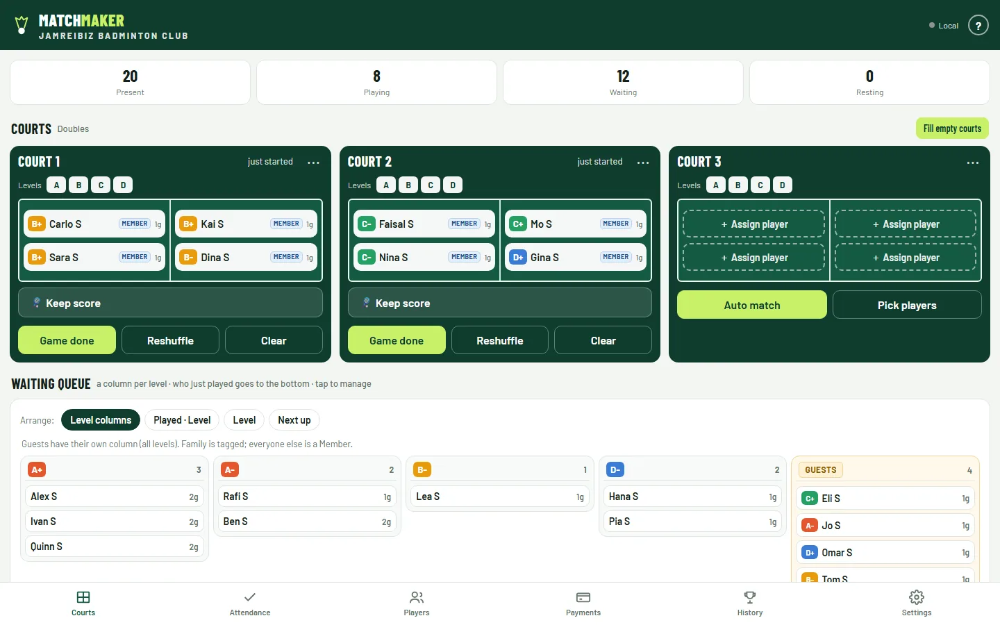
📟 Android tablet (APK)
Install the tablet app
- On the tablet open qr.html and tap Download MatchMaker.apk.
- Open the downloaded file → allow installing from this source → Install.
- Play Protect warning? More details → Install anyway.
- Open Match Maker. It updates itself from then on.

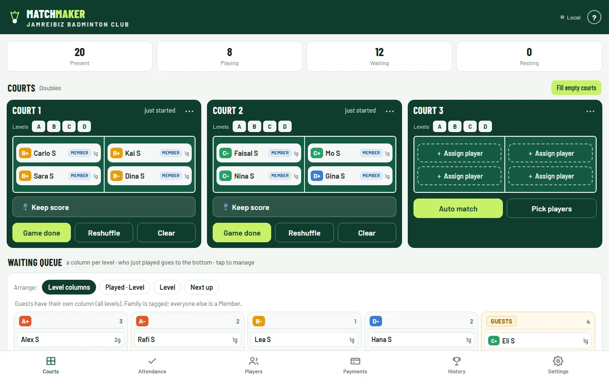
Using several tablets at the court (Main, court scoring, display)? See Several tablets.
📱 Android phone
Scan and install
- Open the Camera (or Google Lens) and point it at the QR code.
- Tap the link — the app opens in Chrome.
- Tap Install on the green bar at the bottom (or Chrome ⋮ → Add to Home screen).
- Open it from the new Match Maker icon.

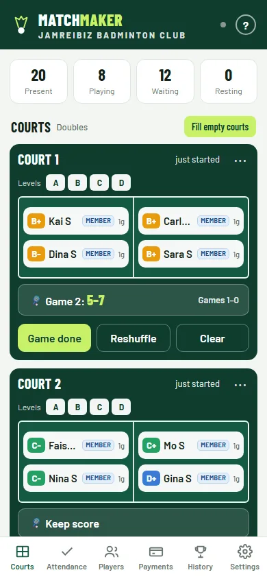
📲 iPhone / iPad
Scan and Add to Home Screen
- Open the Camera and point it at the QR code. Tap the yellow link — it opens in Safari.
- After a moment a green bar shows “Install Match Maker on your iPhone”.
- Tap Share at the bottom of Safari.
- Scroll down and tap Add to Home Screen → Add.
- Open Match Maker from the home screen: full screen, works offline.

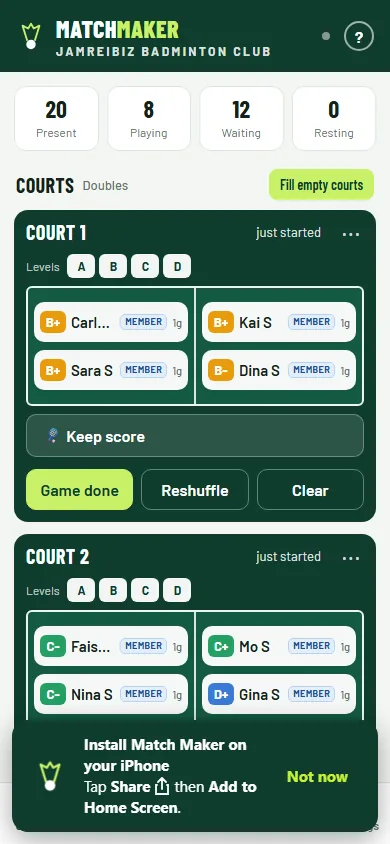
🏸 Running a session
The same on every device. Screens below are from a tablet; phones show the same things stacked.
Attendance
- Tab Attendance: tick everyone who arrives.
- Check in all, or by level / team. Search by name.
- First time? Add players on Players (one by one, a list, or an Excel file).

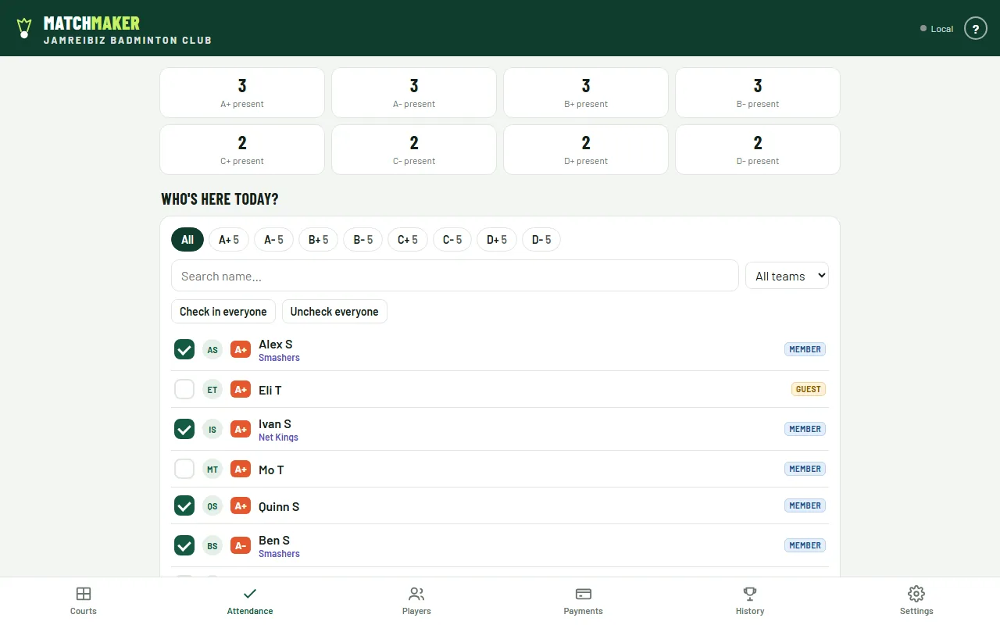
Put players on the courts
- Auto match fills one court with fair, balanced teams.
- Fill empty courts does all courts at once.
- Pick players lets you choose 4 yourself.
- Equal rounds: automatic picks take the players with the fewest games first — someone on 3 games waits until everyone has 3. You can still put anyone on by hand.
Fill a box by hand
- On an empty court tap + Assign player.
- Sort the list with Played (not played first, then 1, 2, 3…), Level or Guest, or search by name.
- The game starts when every box is filled.

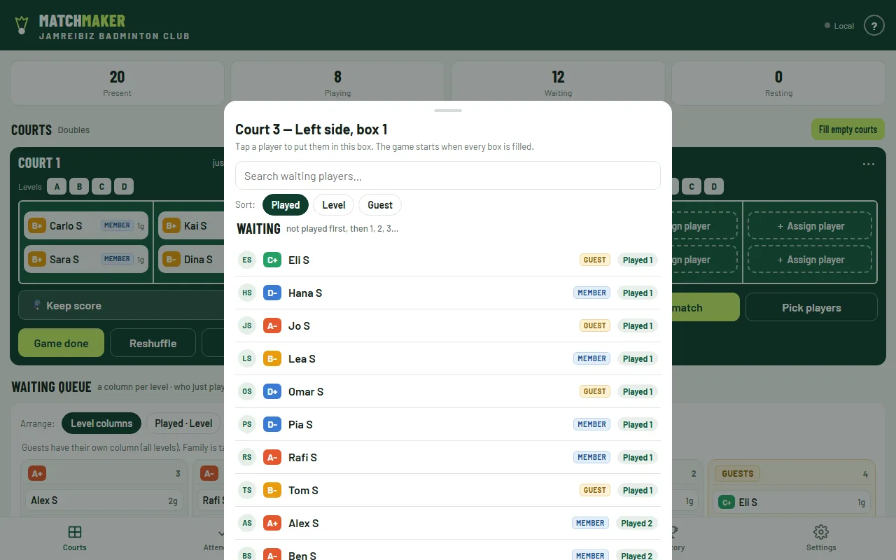
Waiting queue
- Level columns: a column per level A+ … D-, and guests in their own column.
- Each column rotates: not played on top, whoever just played goes to the bottom and moves up as others play.
- Other views under Arrange: Played · Level, Level, Next up (the order Auto match uses).
- Tap a name to rest someone, send them home, or add them to a court.

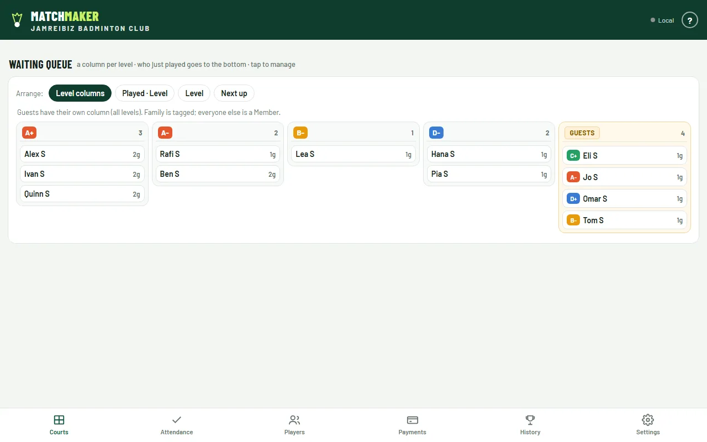
Court menu
- Tap a court's name (or ⋯) for its menu: Game done, Keep score, Reshuffle, Clear court, and the levels allowed on it.
- Tap a player to swap them, rest them (Can't play) or pick a substitute.

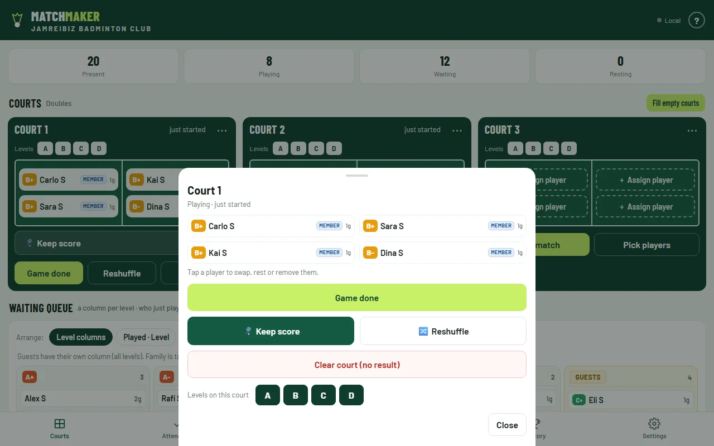
Keep score
- Tap Keep score. After the toss tap Serves first; ⇄ Swap so names match where players stand (only at 0–0).
- Tap the big number of the team that wins each rally.
- The top line says who serves, from which side, and who receives (orange).
- ↶ Undo fixes a wrong tap. Sides swap by themselves at change of ends.


Game done
- When the match is over, Game done blinks red with a “ting ting”.
- Tap it: the winner is taken from the score and saved in History; the court empties.
- Put the next players on and repeat.

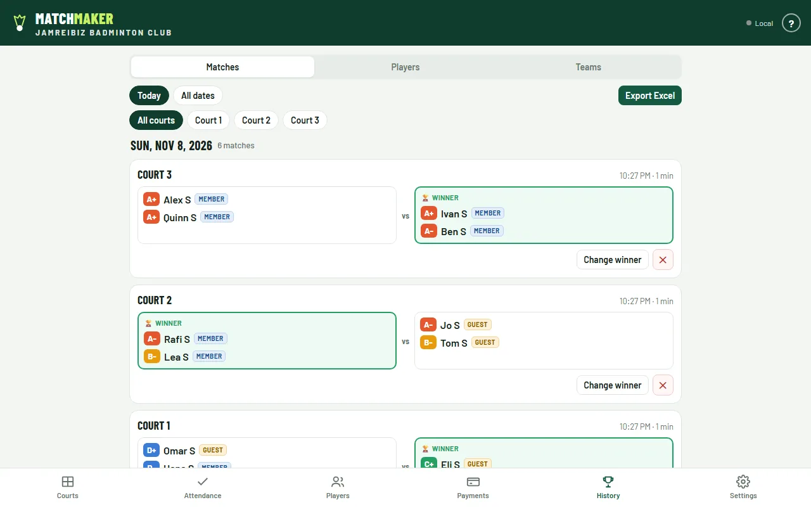
Payments
- Fees count up by themselves as games are played.
- Tap Cash or STC Pay when a player pays. Unpaid shows who is left.
- Copy summary for WhatsApp, Export Excel report for the record.

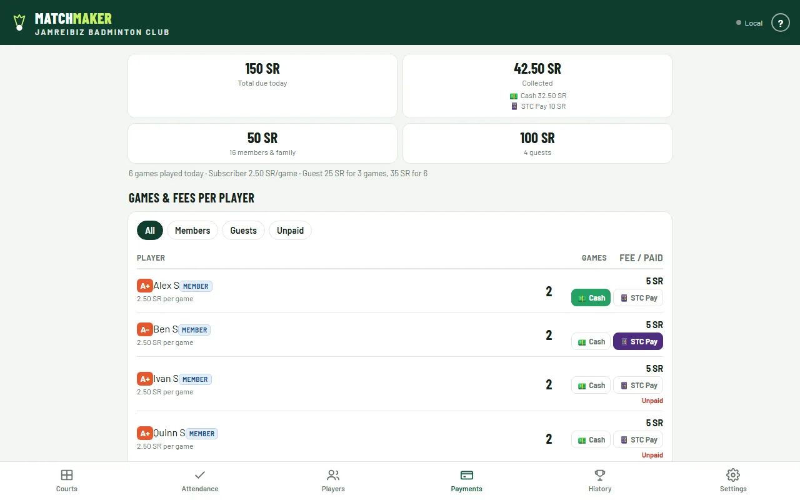
Settings
- Courts, Doubles/Singles, match format, skill mixing, subscriber priority, Equal rounds, fees.
- Update app at the top checks for a new version.
End of the day
- Payments → Unpaid: collect what's left.
- Export Excel report and keep it.
- Settings → Start new session (tap twice). Players, photos and history stay.

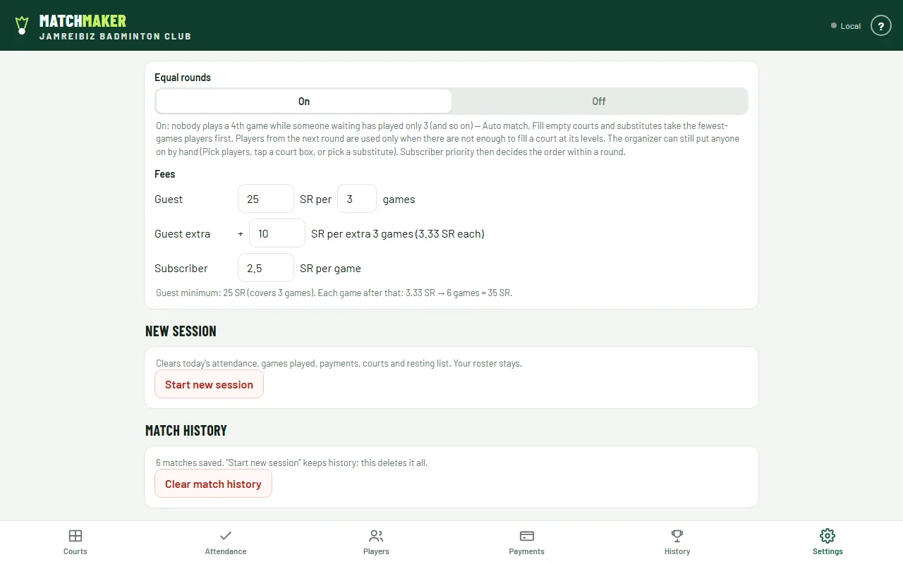
📟📟 Several tablets at the court
- Turn on a hotspot (phone or Main tablet) and connect all tablets. No internet needed.
- Main tablet (organizer): Settings → Tablet sync → Main tablet. Note the address, e.g. 192.168.43.1.
- Court tablets (one per court): Settings → Tablet sync → Court tablet → address, court number, PIN → Start court mode.
- Display tablet: Settings → Tablet sync → Display tablet → address → Connect.

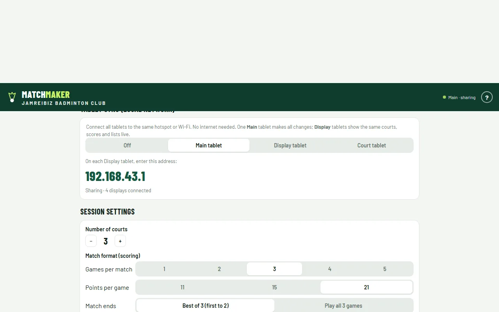
📱 Score with a phone (QR code)
Any phone, iPhone, iPad or tablet with a camera can score a court — it just opens the Match Maker web page. Nothing to install, on the phone or anywhere else. The host can be the laptop, a tablet or a phone. Both the host and the phone need internet (club Wi-Fi or a hotspot with mobile data).
Tap the court — its QR code is in the menu
- On the host (laptop, tablet or phone): Courts tab → tap a court. The menu shows that court's own QR code.
- Once a phone connects, the code is replaced by 📱 Phone connected and a Disconnect button.

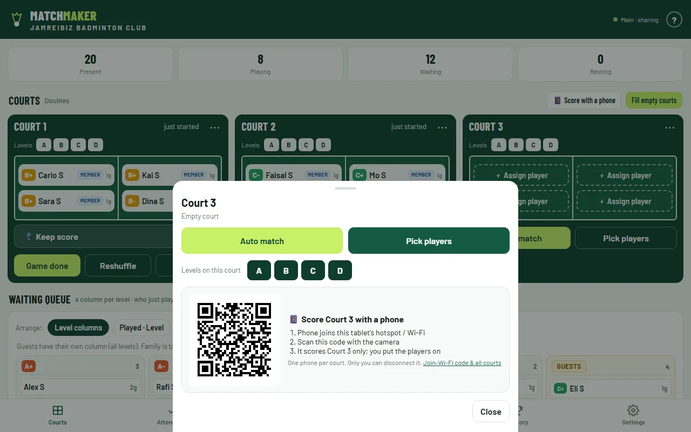
All courts at once, and the Wi-Fi code
- Courts tab → 📱 Score with a phone shows every court's code on one screen.
- Type the club Wi-Fi / hotspot name and password once — a Join the Wi-Fi code appears so phones get online by scanning.

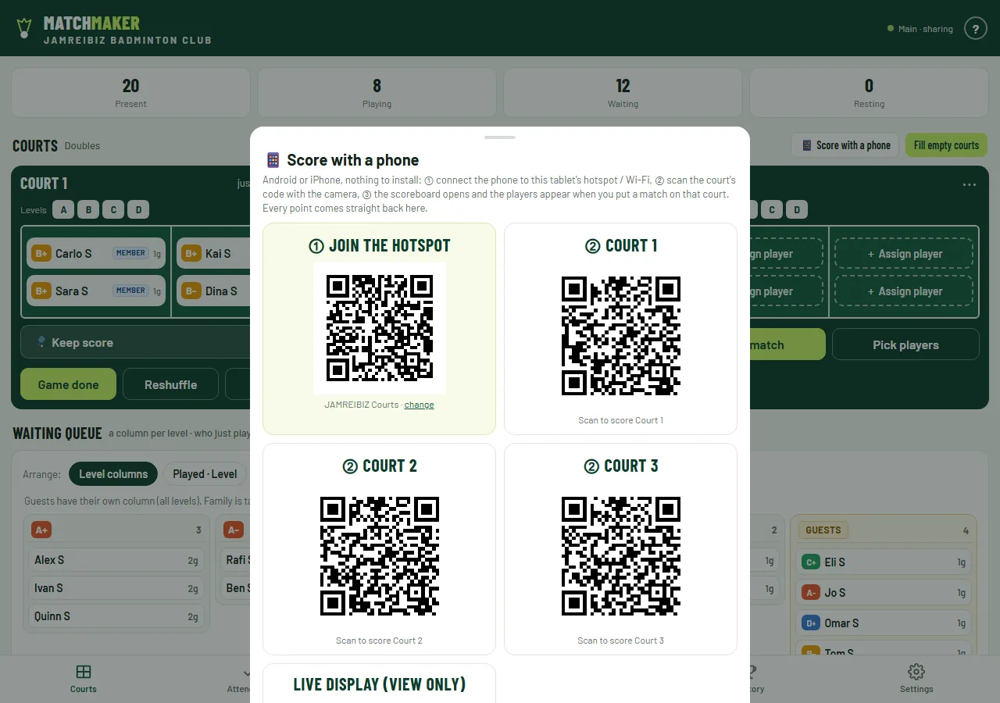
Scan and score
- Make sure the phone has internet (Wi-Fi or mobile data).
- Scan the court's code with the Camera and open the link — the Match Maker page opens in the browser.
- The phone shows that court only. When the organizer puts a match on it, the players appear — tap Serves first and score.
- Every point goes straight to the Main tablet. When the match ends, the organizer taps Game done and the next match appears on the phone.
- The phone can't leave or change players and team names — only the organizer can. Only the organizer can disconnect it; after that it needs to scan the court's new code.
🔄 Updates and your data
| Device | Updates | Data |
|---|---|---|
| Android tablet (APK) | “New version available — Update” bar, or Settings → Update app. Court tablets update themselves while waiting. | Kept on that tablet |
| PC, Android phone, iPhone | New version shows the next time the app is opened | Kept in that browser / app |